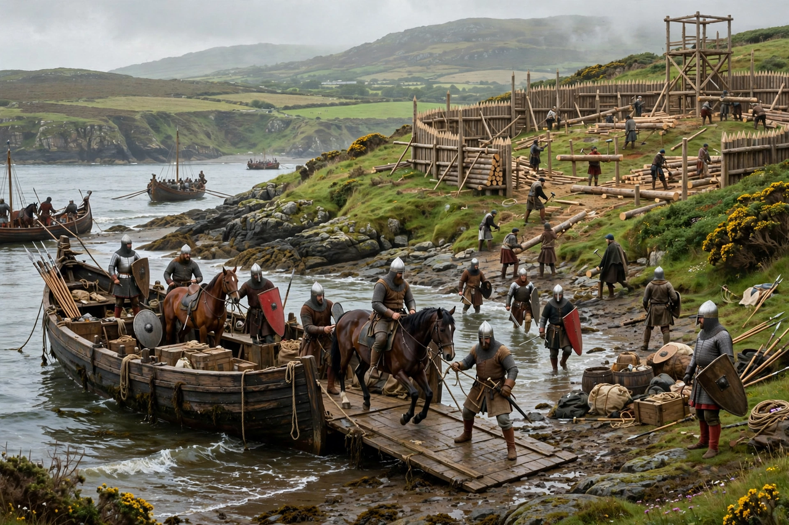

From Wikipedia, the free encyclopedia
The Norman invasion of Ireland, also called the Anglo-Norman invasion, was a series of military campaigns beginning in 1169 in which Norman, Welsh, and Flemish knights — later backed by King Henry II of England — conquered large parts of Ireland. It marked the beginning of more than 750 years of English political involvement in Ireland and transformed Irish society, law, and settlement, introducing castles, towns, and feudal landholding.

In 1166 Diarmait Mac Murchada, the deposed king of Leinster, sought help abroad to recover his kingdom. With the permission of Henry II, he recruited Norman knights in Wales, promising land and his daughter Aoife in marriage to Richard de Clare, Earl of Pembroke — known as "Strongbow."
The first Norman force landed at Bannow Bay in May 1169 and captured Wexford. Strongbow arrived in 1170, took Waterford and Dublin, and married Aoife. Alarmed at the creation of a potentially independent Norman kingdom, Henry II landed at Waterford in October 1171 with a large army; most Irish kings and the Norman lords submitted to him, and he annexed Ireland as a lordship of the English crown. The papal bull Laudabiliter (1155) had purportedly granted Ireland to Henry, though its authenticity is debated.
The invaders built motte-and-bailey and stone castles, founded towns such as those around Dublin and Kilkenny, and introduced English common law and a feudal land system. The Irish church was brought closer to Roman practice. Over time many Norman families became "more Irish than the Irish themselves," adopting Irish language and customs, while a Gaelic resurgence in the 14th century shrank the area of English control to the Pale around Dublin.
See also: Duchy of Normandy · Strongbow · History of Ireland · Lordship of Ireland